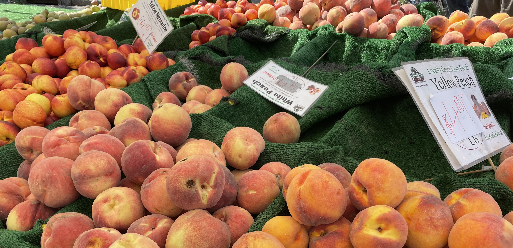

By Rebecca Redelmeier | October 2, 2022
Public programs help New Yorkers afford farm-fresh produce, like these peaches sold at the Grand Army Plaza greenmarket in September. (Rebecca Redelmeier/New York City News Service)
New Yorkers shopping for produce have found relief in publicly-funded food access programs, which make buying fresh food more affordable and accessible as grocery store prices continue to climb.
For Lorrain Gonzales, who visits a weekly free farmer’s market outside of Mt. Zion Church of God 7th Day in East Flatbush most weeks during its operating season, the free produce fills in a gap in her weekly groceries.
During a recent September Saturday, Gonzalez picked up leafy greens, fresh tomatoes and cucumbers, and some peaches at the farmers market. “We can’t afford this in the market, it’s too expensive,” she said.
The free market is just one of many public programs that have become even more essential for some New Yorkers in recent months as the price of fresh food has skyrocketed across the city. Fruit and vegetable grocery prices have climbed over 10 percent in the New York City area in the last year, according to the U.S. Bureau of Labor.
Here’s a breakdown of those programs, and how they serve New Yorkers:
When farmers markets and farm stands across New York City close up for the day, leftover produce is delivered to nearby food pantries, where the produce is then given away for free. Many of these free farmers markets are set up in food-scarce neighborhoods and aim to deliver fresh food to communities that may otherwise face difficulties finding or affording produce. Farmers and bakers who sell at Greenmarkets donate nearly 1 million pounds of food to local non-profit organizations each year, according to GrowNYC.
The federal Supplemental Nutrition Assistance Program, also called SNAP, provides individuals and families with a set dollar amount they can spend on groceries each month. SNAP recipients can choose to spend these dollars on unprepared food at supermarkets, speciality stores, bodegas, and farmers markets. In New York, the maximum dollar amount each SNAP recipient receives corresponds to the number of members in household, from $281 per month for a single person up to $4,250 for large families with one member who is age 60 or older, or is disabled, according to the Office of Temporary and Disability Assistance. As of September 2022, more than 2.8 million New Yorkers were enrolled in SNAP.
The city’s Health Bucks program provides a $2 Health Bucks coupon for every $2 of SNAP benefits customers spend at a participating fresh produce markets, for up to $10 a day. Shoppers can spend Health Bucks on produce at any Greenmarket or farmstand in the city that takes SNAP benefits through the end of the year. In 2020, over 600,000 Health Bucks were distributed in the city – worth more than $1,200,000 in fruits and vegetables, according to the city's 2021 Food Metric Report.
The Farmers' Market Nutrition Program gives extra dollars to low-income mothers with children and seniors to spend on farmers market produce. Each household can receive one coupon booklet of five $5 coupons to use on any produce at any farmers market in the city each year. If a senior is not able to go to the market themselves, family members and anyone that operates as a proxy for them can use the coupons for them. Approximately 300,000 households across New York State use these benefits each year, according to the state Health Department.
These programs help respond to an urgent need for fresh, affordable, and accessible food, said Roslyn Murrell, who helps coordinate a free produce giveaway outside of Mt. Zion Church of God in East Flatbush. However, they don't come close to erasing the challenge that many families experience trying to buy healthy food each week.
"This is a small drop in the bucket, but it's very important," said Murrell.
Data Sources: